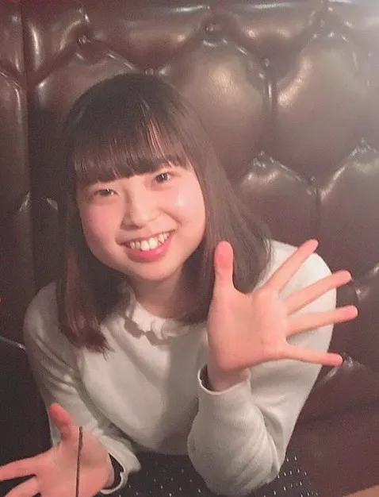

実行委員長より
Rising☆Sun 実行委員会実行委員長の猪野美遼（いのみはる ） と 申します。 私は、 沼津市立門池中学校、 日本大学三島高等学校出身、 現在日本大学法学部 4 年生です。
Rising☆Sun は、静岡県東部の中高生吹奏楽部を対象に企画した合同演奏会であり、その演奏会を実行させるべく立ち上がったのが、 Rising☆Sun 実行委員会です。 実行委員会メンバーは下記の通りで、 高校時代の吹奏楽部仲間や、 Rising☆Sun の演奏会趣旨に共感してくれた友人や先輩、またその紹介者などで、現在 29 名となっています。 毎週ミーティングを行い、 企画運営・ 演奏会趣旨の共有などを行っています。
実行委員会メンバー
| 猪野美遼 |
|---|
| ★実行委員長 |
| 大学4年生 |
| 門池中学校 |
| 日大三島高校卒 |
| 鈴木萌恵華 |
|---|
| ・プログラム班 |
| 大学4年生 |
| 日大三島高校卒 |

| 辻村映里 |
|---|
| 大学4年生 |
| 日大三島高校卒 |
| 廣瀬侑果 |
|---|
| ・プログラム、手紙班 |
| 大学4年生 |
| 日大三島高校卒 |

| 牧部菜々 |
|---|
| 大学3年生 |
| 日大三島高校卒 |
| 伊藤圭梨 |
|---|
| 大学2年生 |
| 日大三島高校卒 |
| 森山慶都 | 廣瀬愛実 | 松本夏穂 | 上條翔大朗(・広報、手紙班) | 髙木雄太(・配信班) | 山崎暖 |
| 小林万莉 | 小柴晴菜 | 高橋湖春 | 吉井玄 | 石川真 | 武末あさひ |
| 岩田紗奈 | 芹田圭哉(・資金班) | 牛山真波(・コロナ班) | 下條未紗子(・曲班) | 小林来紀(・資金班) | 田中智憲 |
| 田村菜月 | 深澤綾乃 | 小浦彩音 | 土井真琴 | 織田翠(・コロナ班) |